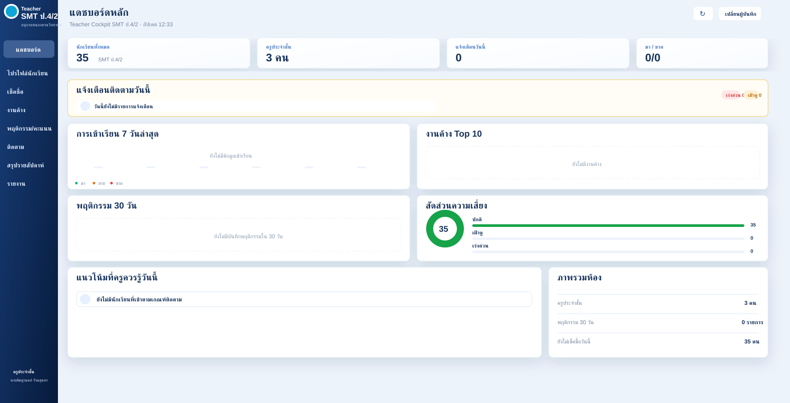

ภาพรวมผู้เรียน
แสดงจำนวนนักเรียน ครูประจำชั้น สถานะการมาเรียน และข้อมูลที่ต้องติดตามในแต่ละวัน
ระบบแดชบอร์ดสำหรับครูประจำชั้นและครูผู้สอน ใช้ติดตามสถานะผู้เรียน การเช็คชื่อ งานค้าง พฤติกรรม คะแนน และสัญญาณความเสี่ยง เพื่อช่วยให้เห็นภาพรวมห้องเรียนได้รวดเร็วขึ้น

Classroom Intelligence
แสดงจำนวนนักเรียน ครูประจำชั้น สถานะการมาเรียน และข้อมูลที่ต้องติดตามในแต่ละวัน
รวมงานค้าง พฤติกรรมในรอบ 30 วัน และแนวโน้มที่ครูควรรู้ เพื่อช่วยวางแผนดูแลรายบุคคล
จัดกลุ่มสถานะปกติ เฝ้าดู และเร่งด่วน ช่วยให้ครูเห็นลำดับความสำคัญในการดูแลผู้เรียน
ออกแบบให้ครูใช้เป็นหลักฐานประกอบการดูแลช่วยเหลือนักเรียน การประชุม PLC และการรายงานผลได้ง่าย
Student Health Snapshot
สรุปจากแบบบันทึกน้ำหนัก/ส่วนสูง ครั้งที่ 1 ภาคเรียนที่ 1 ปีการศึกษา 2569 ใช้เพื่อเห็นภาพรวมห้องเรียนและวางแผนดูแลช่วยเหลือนักเรียน โดยไม่เผยแพร่ข้อมูลรายบุคคลบนหน้าเว็บสาธารณะ
นักเรียน ป.4/2 SMT
กิโลกรัม
เซนติเมตร
กิโลกรัม
เซนติเมตร
ใช้เป็นตัวชี้นำเบื้องต้น ไม่ใช่การวินิจฉัยทางการแพทย์
ควรเก็บข้อมูลรายบุคคลไว้ในระบบภายในสำหรับครูประจำชั้นเท่านั้น แล้วแสดงบน E-Portfolio เป็นสถิติรวม เพื่อใช้ประกอบงานดูแลช่วยเหลือนักเรียน การติดตามสุขภาวะ และการสื่อสารกับผู้เกี่ยวข้องอย่างเหมาะสม
Teacher Cockpit เป็นงานนวัตกรรมดิจิทัลที่เชื่อมบทบาทครู ICT เข้ากับระบบดูแลช่วยเหลือผู้เรียน โดยนำข้อมูลที่ครูต้องตรวจบ่อยมาเรียงเป็นแดชบอร์ดเดียว ลดเวลาค้นหาเอกสารและช่วยให้ตัดสินใจเชิงดูแลได้เร็วขึ้น